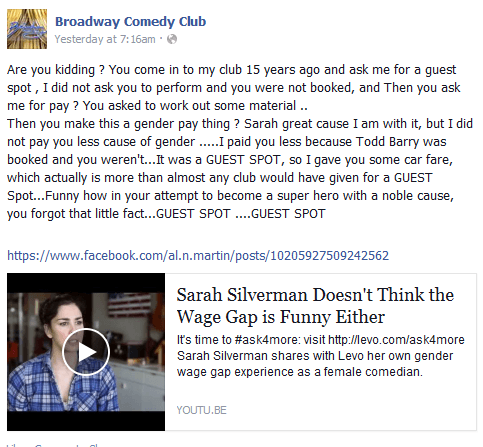
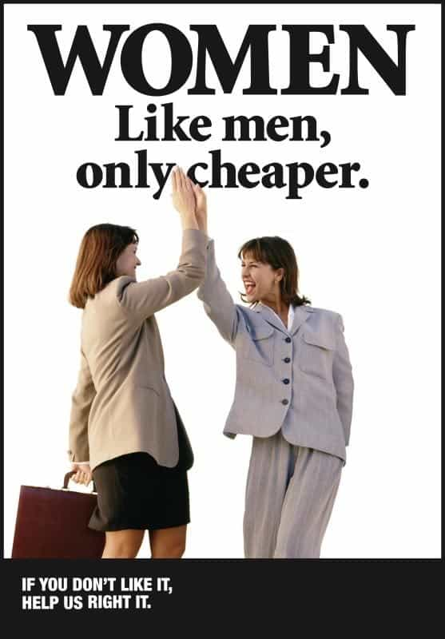

< < < Back
Did Sarah Silverman Lie About Getting Paid Less Than A Man? – Return Of Kings
Recently, stand-up comedienne Sarah Silverman was caught in a huge lie about her past. In a video for the feminist group Levo League, Silverman claimed that during a stand-up show she did with Todd Barry, she was paid $50 less than him because she was a woman:
In response, Al Martin, the owner of the Broadway Comedy Club, where Silverman and Barry performed, called Silverman out for straight-up lying about him:
Are you kidding? You come in to my club 15 years ago and ask me for a guest spot, I did not ask you to perform and you were not booked, and Then you ask me for pay? You asked to work out some material… Then you make this a gender pay thing? Sarah great cause I am with it, but I did not pay you less cause of gender… I paid you less because Todd Barry was booked and you weren’t… It was a GUEST SPOT, so I gave you some car fare, which actually is more than almost any club would have given for a GUEST Spot… Funny how in your attempt to become a super hero with a noble cause, you forgot that little fact… GUEST SPOT… GUEST SPOT

He also responded with a video.
As of this writing, Silverman has not responded to Martin’s comments about her; indeed, she hasn’t Tweeted at all since Wednesday. Her dishonesty on this issue is shameful but not surprising, as the “wage gap” has been one of the most persistent and damaging myths of modern feminism.
There Is No Wage Gap

For the better part of a decade, feminists have been fallaciously claiming that women earn less than men on average for the same work: the most common claim is that women only earn 77 cents for every dollar a man works. Despite the sheer economic illiteracy of this claim—if employers could get away with paying women less for the same work, then they would only employ women—this myth continues to persist, zombie-like, in American public discourse.
As Christina Hoff Sommers reported in Time last September, the wage gap myth persists in large part due to faulty math on the part of feminists. The claim that women earn 77 cents to every dollar that men earn fails to take into account differences in occupations, education level, experience, hours worked per week or anything else. Once these factors are added in, the “wage gap” mysteriously vanishes:
Wage gap activists say women with identical backgrounds and jobs as men still earn less. But they always fail to take into account critical variables. Activist groups like the National Organization for Women have a fallback position: that women’s education and career choices are not truly free—they are driven by powerful sexist stereotypes. In this view, women’s tendency to retreat from the workplace to raise children or to enter fields like early childhood education and psychology, rather than better paying professions like petroleum engineering, is evidence of continued social coercion. Here is the problem: American women are among the best informed and most self-determining human beings in the world. To say that they are manipulated into their life choices by forces beyond their control is divorced from reality and demeaning, to boot.
The fact that Sarah Silverman, a wealthy and popular comedienne, felt the need to make up a story in order to prove the wage gap exists shows that even feminists are slowly becoming aware of the myth’s untenability.
Narrative Uber Alles

Sarah Silverman’s fibbing also displays another reality of feminists and the left: they believe it’s acceptable to make up stories to fit their agenda.
Leftists believe that the truth of individual experiences is irrelevant: so long as a story helps propel a greater narrative, it’s still valuable in their eyes. We saw this when leftists tripped over themselves to defend Sabrina Rubin Erdely’s fraudulent Rolling Stone story on gang rape at the University of Virginia. The line from leftists everywhere from Jessica Valenti to Elizabeth Stoker Bruenig was that it didn’t matter that this particular rape never happened, because there are countless women getting raped on college campuses every day.
This line of thinking is so divorced from logic and reality that it’s a shock that it’s become so prevalent among the chattering classes. In order for a social trend to be true, there has to be actual evidence that it exists. If there’s no statistical or even anecdotal evidence for a trend, whether the issue is college rape or the pay gap, then it doesn’t exist. Fabricating scenarios in service of a political agenda is the height of chicanery.
If the MSM’s attempt to cover up the UVA rape hoax is any indication, it’s unlikely that Sarah Silverman will face any repercussions for lying about being paid less for being a woman. Nonetheless, the mendacity of shysters like her and her ilk need to be catalogued and remembered for posterity.
Read More: Girls With Short Hair Are Damaged